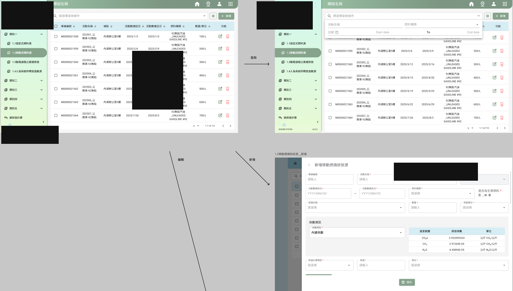
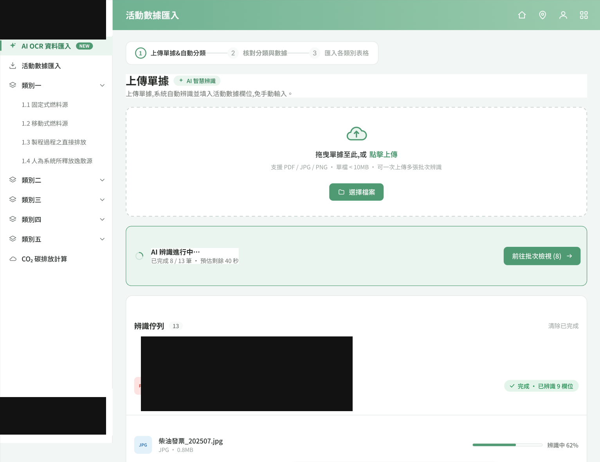
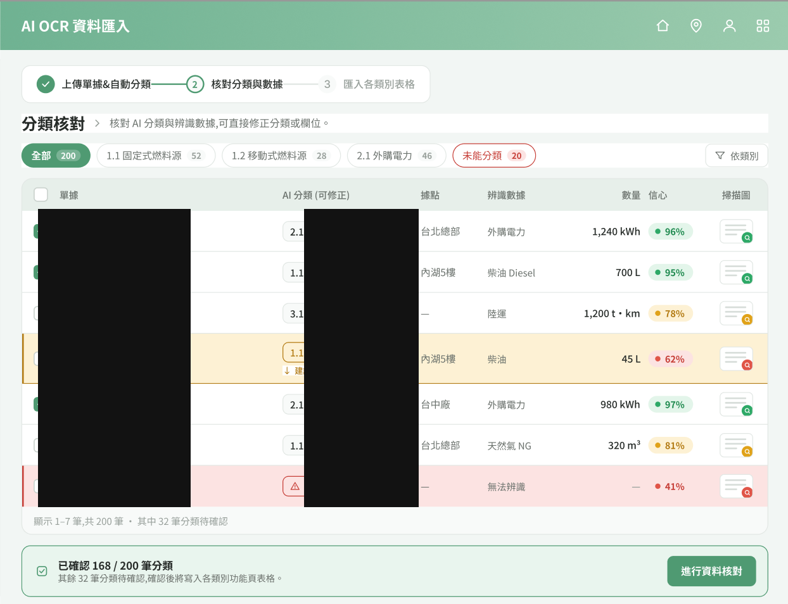
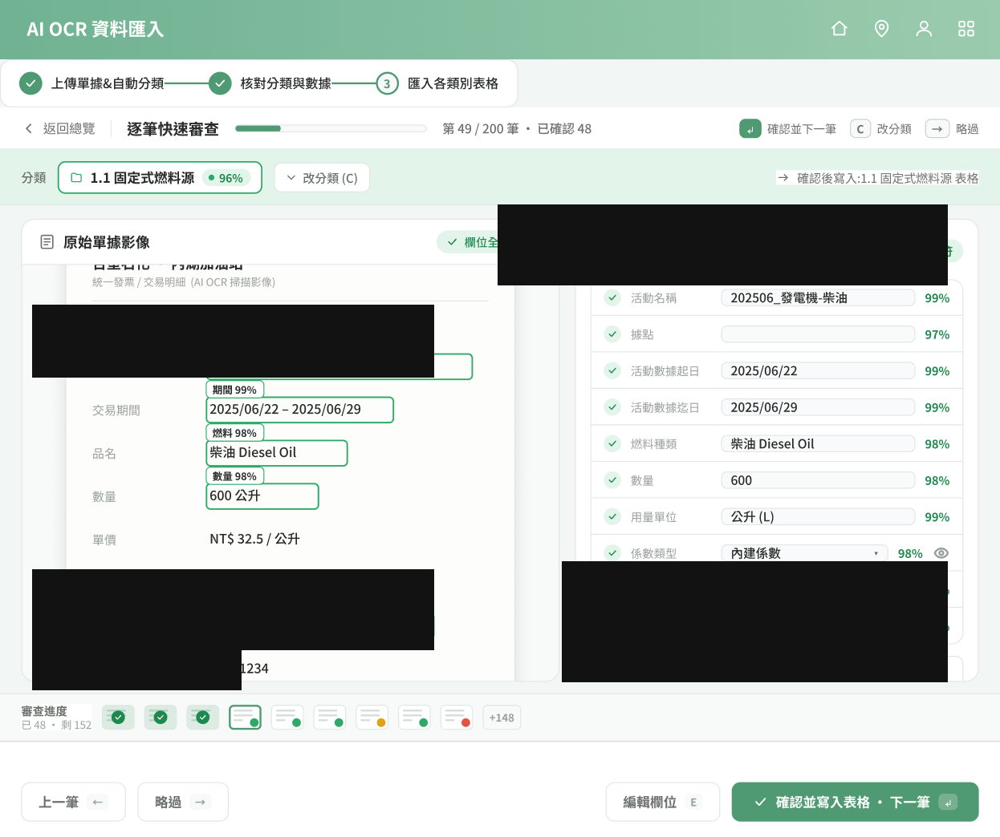
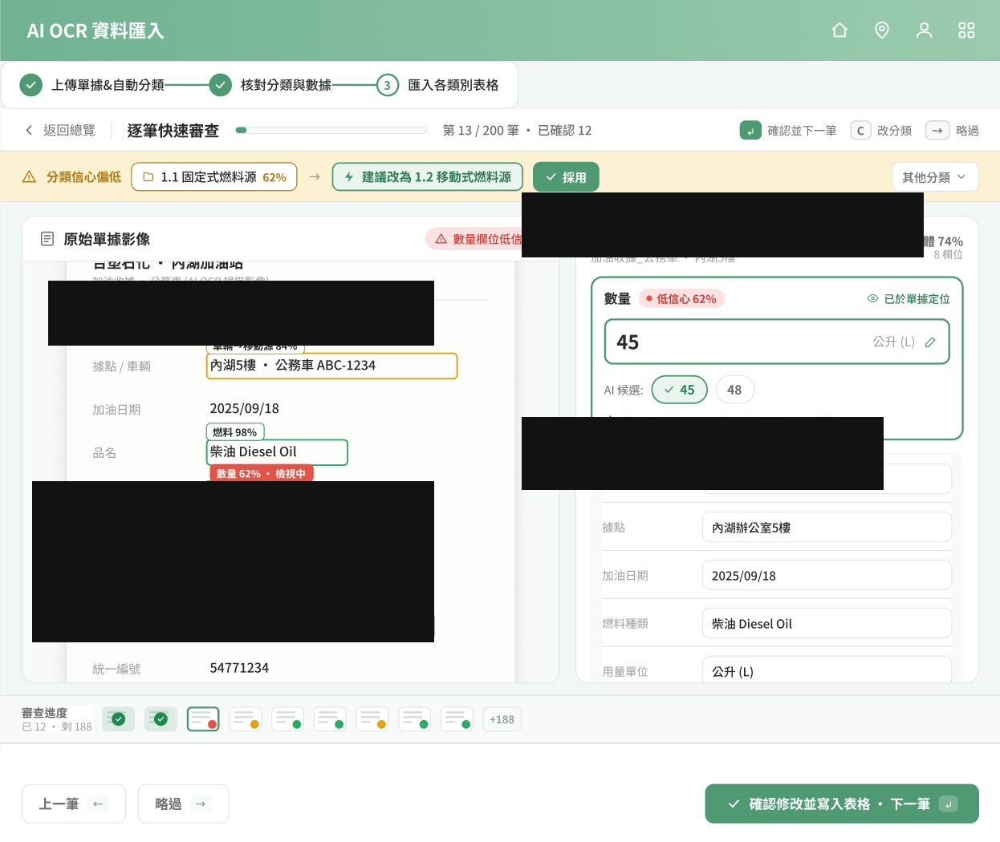
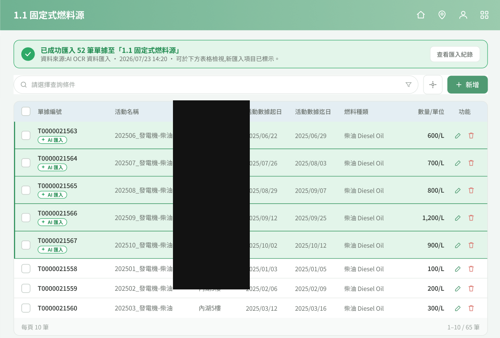

問題
上百份單據逐頁開表、對照紙本手打，易錯且難追溯來源。
解法
整批上傳 → AI OCR 分類填寫 → 信心度總覽 → 原件對照確認 → 寫回表格。
成果
角色從資料輸入者轉為確認者；注意力留給例外，結果可追溯。
- 定義三段式新流程：上傳＆自動分類 → 核對分類與數據 → 匯入各類別表格
- 提出六項人性化原則：從使用者起點出發、先給全貌、AI 建議人決定、可對照、注意力留給例外、結果可追溯
- 示意場景：200 份單據中約 180 份可由 AI 自動分類，人工只需處理少數例外（示意數據）
- 角色轉變：資料輸入者 → 資料確認者；繁瑣重複交給 AI，判斷權留在人
視覺敘事






